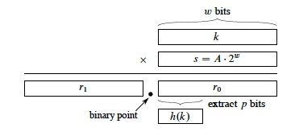

Outline
- Motivations and Introduction
- Hash Tables with Chaining
- Hash Functions and Universal Hashing
- Open Addressing Strategies
Motivations and Introduction
Many applications only need the insert, search and delete operations of a dynamic set. Example: symbol table in a compiler.
Hash tables are an effective approach. Under reasonable assumptions, they have O(1) operations, but they can be Θ(n) worst case
Direct Addressing
Hash tables generalize arrays. Let’s look at the idea with arrays first. Given a key k from a universe U of possible keys, a direct address table stores and retrieves the element in position k of the array.

Direct addressing is applicable when we can allocate an array with one element for every key (i.e., of size |U|). It is trivial to implement:
However, often the space of possible keys is much larger than the number of actual keys we expect, so it would be wasteful of space (and sometimes not possible) to allocate an array of size |U|.
Hash Tables and Functions
Hash tables are also arrays, but typically of size proportional to the number of keys expected to be stored (rather than to the number of keys).
| If the expected keys K ⊂ U, the Universe of keys, and | K | is substantially | ||
| smaller than | U | , then hash tables can reduce storage requirements to Θ( | K | ). |
A hash function h(k) maps the larger universe U of external keys to indices into the array. Given a table of size m with zero-based indexing (we shall see why this is useful):
- h : U -> {0, 1, …, m-1}.
- We say that k hashes to slot h(k).
Collisions
The major issue to deal with in designing and implementing hash tables is what to do when the hash function maps multiple keys to the same table entry.
| Collisions may or may not happen when | K | ≤ m, but definitely happens when |
| K | > m. (Is there any way to avoid this?) |
There are two major approaches: Chaining (the preferred method) and Open Addressing. We’ll look at these and also hash function design.
Hash Tables with Chaining
A simple resolution: Put elements that hash to the same slot into a linked list. This is called chaining because we chain elements off the slot of the hash table.
- Slot j points to the head of a list of all stored elements that hash to j, or to NIL if there are no such elements.
- Doubly linked lists may be used when deletions are expected to be frequent.
- Sentinels can also be used to simplify the code.
Pseudocode for Chaining
Implementation is simple if you already have implemented linked lists:

What are the running times for these algorithms? Which can we state directly, and what do we need to know to determine the others?
Analysis of Hashing with Chaining
How long does it take to find an element with a given key, or to determine that there is no such element?
- Analysis is in terms of the load factor α = n/m, where
- n = number of elements in the table
- m = number of slots in the table = number of (possibly empty) linked lists
- The load factor α is the average number of elements per linked list.
- Can have α < 1; α = 1; or α > 1.
-
Worst case is when all n keys hash to the same slot.
Why? What happens? Θ(__?)_ - Average case depends on how well the hash function distributes the keys among the slots.
Let’s analyze averge-case performance under the assumption of simple uniform hashing: any given element is equally likely to hash into any of the m slots:
- For j = 0, 1, …, m-1, denote the length of list T[j] by nj.
- Then n = n0 + n1 + … + nm-1.
- Average value of nj is E[nj] = α = n/m.
- Assuming h(k) computed in O(1), so time to search for k depends on length nh(k) of the list T[h(k)].
Consider two cases: Unsuccessful and Successful search. The former analysis is simpler because you always search to the end, but for successful search it depends on where in T[h(k)] the element with key k will be found.
Unsuccessful Search
Simple uniform hashing means that any key not in the table is equally likely to hash to any of the m slots.
We need to search to end of the list T[h(k)]. It has expected length E[nh(k)] = α = n/m.
Adding the time to compute the hash function gives Θ(1 + α). (We leave in the “1” term for the initial computation of h since α can be 0, and we don’t want to say that the computation takes Θ(0) time).
Successful Search
We assume that the element x being searched for is equally likely to be any of the n elements stored in the table.
The number of elements examined during a successful search for x is 1 more than the number of elements that appear before x in x’s list (because we have to search them, and then examine x).
These are the elements inserted after x was inserted (because we insert at the head of the list).
Need to find on average, over the n elements x in the table, how many elements were inserted into x’s list after x was inserted. Lucky we just studied indicator random variables!
For i = 1, 2, …, n, let xi be the i_th element inserted into the table, and let _ki = key[xi].
For all i and j, define the indicator random variable:
Xij = I{h(ki) = h(kj)}. (The event that keys _ki and kj hash to the same slot.)_

Simple uniform hashing implies that Pr{h(ki) = h(kj)} = 1/m (Why?)
Therefore, E[Xij] = 1/m by Lemma 1 (Topic #5).
The expected number of elements examined in a successful search is those elements j that are inserted after the element i of interest and that end up in the same linked list (Xij):
- The innermost summation is adding up, for all j inserted after i (j=i+1), those that are in the same hash table (when Xij = 1).
- The outermost summation runs this over all n of the keys inserted (indexed by i), and finds the average by dividing by n.
I fill in some of the implicit steps in the rest of the text’s analysis. First, by linearity of expectation we can move the E in:
That is the crucial move: instead of analyzing the probability of complex events, use indicator random variables to break them down into simple events that we know the probabilities for. In this case we know E[Xi,j] (if you don’t know, ask the lemming above):
Multiplying 1/n by the terms inside the summation,
- For the first term, we get Σ_i=1,_n_1/_n, which is just n/n or 1
- Move 1/m outside the summation of the second term to get 1/nm. This leaves Σ_i=1,_n(Σ_j=_i+1,n_1), which simplifies as shown below (if you added 1 _n times, you would overshoot by i).
Splitting the two terms being summed, the first is clearly n_2, and the second is the familiar sum of the first _n numbers:


Distributing the 1/nm, we get 1 + (n_2/_nm - n(n+1)/2_nm_ = 1 + n/m - (n+1)/2_m_ = 1 + 2_n/2_m - (n+1)/2_m_, and now we can combine the two fractions:

Now we can turn two instances of n/m into α with this preparation: 1 + (n - 1)/2_m_ = 1 + n/2_m_ - 1/2_m_ = 1 + α/2 - n/2_mn_ =
Adding the time (1) for computing the hash function, the expected total time for a successful search is:
Θ(2 + α/2 - α/2_n_) = Θ(1 + α).
since the third term vanishes in significance as n grows, and the constants 2 and 1/2 have Θ(1) growth rate.
Thus, search is an average of Θ(1 + α) in either case.
If the number of elements stored n is bounded within a constant factor of the number of slots m, i.e., n = O(m), then α is a constant, and search is O(1) on average.
Since insertion takes O(1) worst case and deletion takes O(1) worst case when doubly linked lists are used, all three operations for hash tables are O(1) on average.
(I went through that analysis in detail to show again the utility of indicator random variables and to demonstrate what is possibly the most crucial fact of this chapter, but we won’t do the other analyses in detail. With perserverence you can similarly unpack the other analyses.)
Hash Functions and Universal Hashing
Ideally a hash function satisfies the assumptions of simple uniform hashing.
This is not possible in practice, since we don’t know in advance the probability distribution of the keys, and they may not be drawn independently.
Instead, we use heuristics based on what we know about the domain of the keys to create a hash function that performs well.
Keys as natural numbers
Hash functions assume that the keys are natural numbers. When they are not, a conversion is needed. Some options:
- Floating point numbers: If an integer is required, sum the mantissa and exponent, treating them as integers.
- Character string: Sum the ASCII or Unicode values of the characters of the string.
- Character string: Interpret the string as an integer expressed in some radix notation. (This gives very large integers.)
Division method
A common hash function: h(k) = k mod m.
(Why does this potentially produce all legal values, and only legal values?)
Advantage: Fast, since just one division operation required.
Disadvantage: Need to avoid certain values of m, for example:
-
Powers of 2. If m = 2_p_ for integer p then h(k) is the least significant p bits of k.
(There may be a domain pattern that makes the keys clump together). -
If character strings are interpreted in radix 2_p_ then m = 2_p_ - 1 is a bad choice: permutations of characters hash the same.
A prime number not too close to an exact power of 2 is a good choice for m.
Multiplication method
h(k) = Floor(m(k A mod 1)), where k A mod 1 = fractional part of _k_A.
- Choose a constant A in range 0 < A < 1.
- Multiply k by A
- Extract the fractional part of _k_A
- Multiply the fractional part by m
- Take the floor of the result.
Disadvantage: Slower than division.
Advantage: The value of m is not critical.
The book discusses an implementation that we won’t get into …

Universal Hashing

Our malicious adversary is back! He’s choosing keys that all hash to the same slot, giving worst case behavior and gumming up our servers! What to do?
Random algorithms to the rescue: randomly choose a different hash function each time you construct and use a new hash table.
But it has to be a good one. Can we define a family of good candidates?
Consider a finite collection Η of hash functions that map universe U of keys into {0, 1, …, m-1}.
Η is universal if for each pair of keys k, l ∈ U, where k ≠ l, the number of hash functions h ∈ Η for which h(k) = h(l) is less than or equal to |Η|/m (that’s the size of Η divided by m).
In other words, with a hash function h chosen randomly from Η, the probability of collision between two different keys is no more than 1/m, the chance of a collision when choosing two slots randomly and independently.
Universal hash functions are good because (proven as Theorem 11.3 in text):
- If k is not in the table, the expected length E[nh(k)] of the list that k hashes to is less than or equal to α.
- If k is in the table, the expected length E[nh(k)] of the list that holds k is less than or equal to 1 + α.
Therefore, the expected time for search is O(1).
One candidate for a collection Η of hash functions is:
Η = {hab(k) : hab(k) = ((ak + b) mod p) mod m)}, where a ∈ {1, 2, …, p-1} and b ∈ {0, 1, …, p-1}, where p is prime and larger than the largest key.
Details in text, including proof that this provides a universal set of hash functions. Java built in hash functions take care of much of this for you: read the Java documentation for details.
Open Addressing Strategies
Open Addressing seeks to avoid the extra storage of linked lists by putting all the keys in the hash table itself.
Of course, we need a way to deal with collisions. If a slot is already occupied we will apply a systematic strategy for searching for alternative slots. This same strategy is used in both insertion and search.
Probes and h(k,i)
Examining a slot is called a probe. We need to extend the hash function h to take the probe number as a second argument, so that h can try something different on subsequent probes. We count probes from 0 to m-1 (you’ll see why later), so the second argument takes on the same values as the result of the function:
h : U x {0, 1, … m-1} -> {0, 1, … m-1}
We require that the probe sequence
⟨ h(k,0), h(k,1) … h(k,m-1) ⟩
be a permutation of ⟨ 0, 1, … m-1 ⟩. Another way to state this requirement is that all the positions are visited.
There are three possible outcomes to a probe: k is in the slot probed (successful search); the slot contains NIL (unsuccessful search); or some other key is in the slot (need to continue search).
The strategy for this continuation is the crux of the problem, but first let’s look at the general pseudocode.
Pseudocode
Insertion returns the index of the slot it put the element in k, or throws an error if the table is full:

Search returns either the index of the slot containing element of key k, or NIL if the search is unsuccessful:

Deletion is a bit complicated. We can’t just write NIL into the slot we want to delete. (Why?)
Instead, we write a special value DELETED. During search, we treat it as if it were a non-matching key, but insertion treats it as empty and reuses the slot.
Problem: the search time is no longer dependent on α. (Why?)
The ideal is to have uniform hashing, where each key is equally likely to have any of the m! permutations of ⟨0, 1, … m-1⟩ as its probe sequence. But this is hard to implement: we try to guarantee that the probe sequence is some permutation of ⟨0, 1, … m-1⟩.
We will define the hash functions in terms of ** auxiliary hash functions** that do the initial mapping, and define the primary function in terms of its i_th iterations, where 0 ≤ _i < m.
Linear Probing
Given an auxiliary hash function h’, the probe sequence starts at h’(k), and continues sequentially through the table:
h(k,i) = (h’(k) + i) mod m
Problem: primary clustering: sequences of keys with the same h’ value build up long runs of occupied sequences.
Quadratic Probing
Quadratic probing is attempt to fix this … instead of reprobing linearly, QP “jumps” around the table according to a quadratic function of the probe, for example:
h(k,i) = (h’(k) + c_1_i + c_2_i_2) mod _m,
where _c_1 and _c_2 are constants.
Problem: secondary clustering: although primary clusters across sequential runs of table positions don’t occur, two keys with the same h’ may still have the same probe sequence, creating clusters that are broken across the same sequence of “jumps”.
Double Hashing
A better approach: use two auxiliary hash functions h1 and h_2, where _h_1
gives the initial probe and _h_2 gives the remaining probes (here you can see
that having _i=0 initially drops out the second hash until it is needed):

h(k,i) = (h_1(_k) + ih_2(_k)) mod m.
h_2(_k) must be relatively prime to m (relatively prime means they have no factors in common other than 1) to guarantee that the probe sequence is a full permutation of ⟨0, 1, … m-1⟩. Two approaches:
- Choose m to be a power of 2 and _h_2 to always produce an odd number > 1.
- Let m be prime and have 1 < h_2(_k) < m.
(The example figure is h_1(_k) = k mod 13, and h_2(_k) = 1 + (k mod 11).)
There are Θ(m_2) different probe sequences, since each possible combination of _h_1(_k) and h_2(_k) gives a different probe sequence. This is an improvement over linear or quadratic hashing.
Analysis of Open Addressing
The textbook develops two theorems you will use to compute the expected number of probes for unsuccessful and successful search. (These theorems require α < 1 because an expression 1/1−α is derived and we don’t want to divide by 0.)
Theorem 11.6: Given an open-address hash table with load factor α = n/m < 1, the expected number of probes in an unsuccessful search is at most 1/(1 − α), assuming uniform hashing.
Theorem 11.8: Given an open-address hash table with load factor α = n/m < 1, the expected number of probes in a successful search is at most (1/α) ln (1/(1 − α)), assuming uniform hashing and assuming that each key in the table is equally likely to be searched for.
We leave the proofs for the textbook, but note particularly the “intuitive interpretation” in the proof of 11.6 of the expected number of probes on page 275:
E[X] = 1/(1-α) = 1 + α + α2 + α3 + …
We always make the first probe (1). With probability α < 1, the first probe finds an occupied slot, so we need to probe a second time (α). With probability α2, the first two slots are occupied, so we need to make a third probe …
Dan Suthers Last modified: Sun Feb 16 02:14:59 HST 2014
Images are from the instructor’s material for Cormen et al. Introduction to
Algorithms, Third Edition.